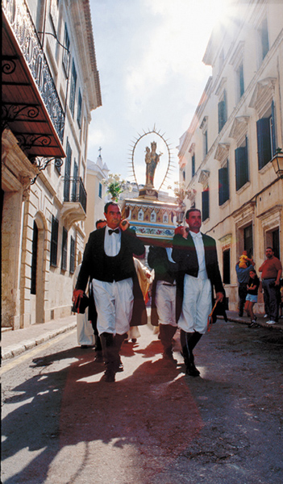
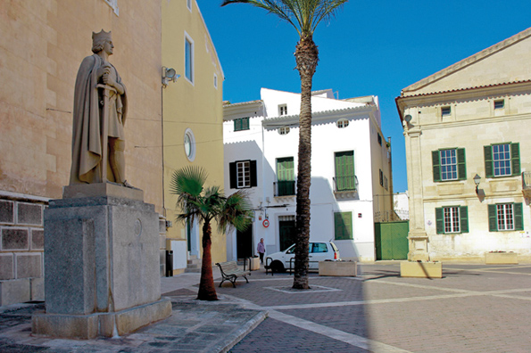

Maó / Mahón. Die Legende der leblosen Stadt
 Die bösen Zungen behaupten, dass Mahón Schauplatz einer infamen Kapitulation wurde, als im 16. Jahrhundert, genau gesagt am 1. September 1535, der berüchtigte Pirat Barbarossa in den Hafen von Mahon einfuhr und die Stadt, die zu jener Zeit lediglich ein kleiner Ort mit Händlern von nur geringem kriegerischen Geist war, umzingelte. Schon drei Tage Belagerung reichten aus, um sie zu Verhandlungen bereit zu machen. Laut dieser eigentümlichen schwarzen Legende hatte Barbarossa die Plünderung der Stadt gefordert und die Übergabe der Bevölkerung als Gefangene, aber 10 ausgewählte Familien sollten verschont bleiben. Als die Türken wieder abzogen, nahmen der Statthalter und die Stadträte von Ciutadella die Stadtherren von Mahon gefangen und klagten sie des Verrats an, was immer noch besser war, als eine Niederlage zu akzeptieren, an der sie ebenso schuld waren. 23 Jahre später kehrten die Ottomanen nach Mahon zurück, wurden aber von der Artillerie der aufstrebenden Festung von San Felipe abgewehrt und marschierten gegen Ciutadella, aber dies ist wieder eine andere Geschichte….
Die bösen Zungen behaupten, dass Mahón Schauplatz einer infamen Kapitulation wurde, als im 16. Jahrhundert, genau gesagt am 1. September 1535, der berüchtigte Pirat Barbarossa in den Hafen von Mahon einfuhr und die Stadt, die zu jener Zeit lediglich ein kleiner Ort mit Händlern von nur geringem kriegerischen Geist war, umzingelte. Schon drei Tage Belagerung reichten aus, um sie zu Verhandlungen bereit zu machen. Laut dieser eigentümlichen schwarzen Legende hatte Barbarossa die Plünderung der Stadt gefordert und die Übergabe der Bevölkerung als Gefangene, aber 10 ausgewählte Familien sollten verschont bleiben. Als die Türken wieder abzogen, nahmen der Statthalter und die Stadträte von Ciutadella die Stadtherren von Mahon gefangen und klagten sie des Verrats an, was immer noch besser war, als eine Niederlage zu akzeptieren, an der sie ebenso schuld waren. 23 Jahre später kehrten die Ottomanen nach Mahon zurück, wurden aber von der Artillerie der aufstrebenden Festung von San Felipe abgewehrt und marschierten gegen Ciutadella, aber dies ist wieder eine andere Geschichte….
Obwohl die Version des Verrats von namhaften Historikern abgestritten wurde, welche anführten, dass Mahon weder über Abwehranlagen noch über Militär-Garnisonen verfügte und deshalb keine andere Alternative als die Kapitulation hatte, schwebt diese Legende über der Ehre der Bevölkerung Mahons. Jahre später zeigten die Einwohner der anderen Stadt im Westen mehr Zivilcourage, als diese von den Sarazenen erobert wurde (was einige der herausragenden Familien Ciutadellas dazu nutzten, sich der Ländereien der Gefangenen aus Konstantinopel zu bemächtigen) und man kann vielleicht davon ausgehen, dass diese Tatsache der Keim der Rivalität ist, die zwischen den beiden Städten der Insel herrscht.
Im Laufe der Zeit wurden Mahón und ihr Hafen von zivilisierteren Invasoren eher objektiv eingeschätzt, und zwar von den Briten, die sie zur Hauptstadt der Insel machten und die den ach so störenden Klerus nach Westen schickten, wo er bis heute noch glücklich ist. Die Söhne des Perfiden Albion wussten sehr wohl die Herrlichkeit des Hafens von Mahón und die besondere Idiosynkrasie seiner Einwohner zu schätzen, gastfreundlich und kaum zu Abenteuern neigend, zudem frei von religiösem Fanatismus und Freunde der Kultur und des freien Handels. Im Allgemeinen kamen die Briten gut mit den Mahoneses aus, mit denen sie sich in den literarischen Herrenhäusern der Straße “Isabel Segunda“ verbrüderten und sich vielleicht über die Anhäufung pro Quadratmeter an Klerikern in der Stadt im Westen lustig machten, sowie auch über die Heilige Inquisition, von der Menorca während jenes Jahrhunderts verschont bleiben sollte.
 Welche ist nun wirklich die Essenz des Seins von Mahón? Laut Oliaigo Pons, einer fiktiven Person und dem Hauptdarsteller der Feste von Mahón von vor ein paar Jahren, ist sie die klassendurchlässigste Stadt der ganzen Welt. Alle sind zur selben Schule gegangen und haben ihre Gedanken ausgetauscht, alle gehen in dasselbe Krankenhaus und tauschen dort Körperflüssigkeiten und Ausdünstungen aus, und alle sind deshalb besonders dazu geneigt, keine Klassenunterschiede zu machen. In seiner Rede zum Auftakt der Feste sagte Oliaigo, die Mahoneses sind weder gewagt noch streitbar noch Träumer, sie finden sich mit dem goldenen Mittelweg ab, es muss nur alles halbwegs richtig gemacht sein. Und trotzdem sind sie immer in Bewegung und haben ein beeindruckendes Geflecht verschiedener Gewerbe erschaffen (Gewerbetreibende der alten Art, ohne “coaching“), z.B. die “Industria Fabril Mahonesa“ oder die “Anglo-Española de Motores“, oder auch die zu ihrer Zeit aufstrebende Herstellung der Geldbeutel aus Silber, oder später der Rechenmaschinen, der Modeschmuck, das Schuhwerk, und der hervorragende Käse, dessen “D.O“ den Namen dieser Stadt trägt, schön und galant, wie sie von ihrer rasanten und liebenswerten Hymne besungen wird.
Welche ist nun wirklich die Essenz des Seins von Mahón? Laut Oliaigo Pons, einer fiktiven Person und dem Hauptdarsteller der Feste von Mahón von vor ein paar Jahren, ist sie die klassendurchlässigste Stadt der ganzen Welt. Alle sind zur selben Schule gegangen und haben ihre Gedanken ausgetauscht, alle gehen in dasselbe Krankenhaus und tauschen dort Körperflüssigkeiten und Ausdünstungen aus, und alle sind deshalb besonders dazu geneigt, keine Klassenunterschiede zu machen. In seiner Rede zum Auftakt der Feste sagte Oliaigo, die Mahoneses sind weder gewagt noch streitbar noch Träumer, sie finden sich mit dem goldenen Mittelweg ab, es muss nur alles halbwegs richtig gemacht sein. Und trotzdem sind sie immer in Bewegung und haben ein beeindruckendes Geflecht verschiedener Gewerbe erschaffen (Gewerbetreibende der alten Art, ohne “coaching“), z.B. die “Industria Fabril Mahonesa“ oder die “Anglo-Española de Motores“, oder auch die zu ihrer Zeit aufstrebende Herstellung der Geldbeutel aus Silber, oder später der Rechenmaschinen, der Modeschmuck, das Schuhwerk, und der hervorragende Käse, dessen “D.O“ den Namen dieser Stadt trägt, schön und galant, wie sie von ihrer rasanten und liebenswerten Hymne besungen wird.
Aber man kann die Seele Mahons nicht begreifen, ohne den Geist der Aufklärung des 18. Jahrhundert mit einzubeziehen, während dessen es die englische und französische Präsenz ermöglichten, dass die Studenten mit Europa in Kontakt kamen. Glaubt man dem “alten Lehrer“ Hernández Mora (so wie es das ausgezeichnete Buch “Maó“ eines anderen authentischen Intellektuellen, Josep Maria Quintana, hervorhebt) geschah dies ausschließlich in Mahón, dessen Ruf, eine liberale und kulturorientierte Stadt zu sein, über ein solides Fundament verfügt: Das “Ateneo“ mit seinen Debatten und Konferenzen, das “Orfeón Mahonés“ und seine Theatervorstellungen, das “Teatro Principal“, wo von jeher und ohne Únterlass Oper von erstklassiger Qualität aufgeführt wird, und das von den “Amigos de la Opera“ verwaltet wird, die “Juventudes Musicales“, die Freunde der Orgel von “Santa María“, das “Museo de Menorca“, die Sammlung “Hernandez Mora“, die Stadtbibliothek….
Aber Mahón ist letztendlich sein Hafen, möglicherweise der schönste des Mittelmeers, eine Wahrheit, die von den Mahoneses aufgebracht wurde und seitdem unumstößlich ist. Bei gutem Wetter spazieren sie entlang seiner “vorera“ (Ufer) und tauschen sich aus. Sie spazieren, mit einem populären Sprachwitz gesprochen, “salmonete hoch und runter“ (wobei das menorquinische Wort für “salmonete“ (Rotbarbe) gleichzeitig die Mole und den Fisch bezeichnet, “moll“). Im Winter dagegen verlagert sich dieser Austausch auf die Samstag-Vormittage, an denen sich die Fußgängerzone ( Carrer Nou, S’Arravaleta und neuerdings auch Ses Moreres und die Costa de Sa Placa) in ein soziales Forum verwandelt, das weitaus mehr geschätzt wird als jene im Internet.
Eine ungewöhnlich intensive kulturelle Lebhaftigkeit, in Form von Kunstausstellungen, Konferenzen, Foren, Oper-Aufführungen, speziell programmierten Kino-Wochen, verleihen der Stadt eine Lebendigkeit, die nicht nur der Legende widerspricht, eine halbtote Stadt zu sein, die einige Nostalgiker verbreiten, die ihre eigenen Heimatorte zum Mythos erhoben haben, sondern auch denjenigen, die eine minimale kulturelle Neugier verspüren, in die Bredouille bringen, wie sie ein weiteres Wochenende einen solchen Rhythmus aushalten sollen. Man muss auf jeden Fall das Leben in Mahón mit Ruhe angehen, um nicht aus dem lässigen Verlauf des Lebens auszuscheren, und man braucht kein Glaubensbekenntnis aussprechen. Man muss sich nicht anstrengen, um ein guter Mahonés zu sein, wir sind keine Patrioten und schließen niemanden aus. Es reicht damit aus, einfach nur mitzumachen.